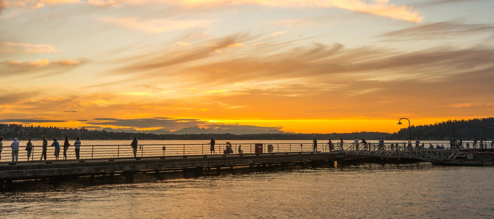
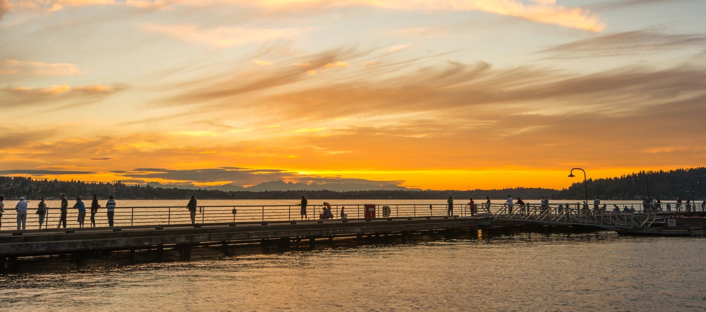
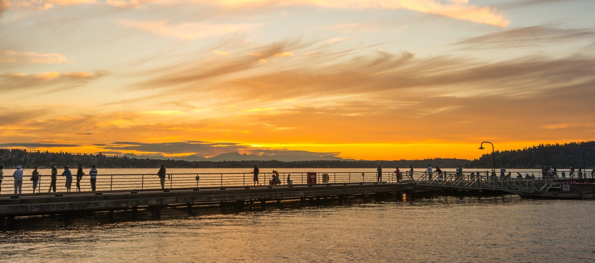
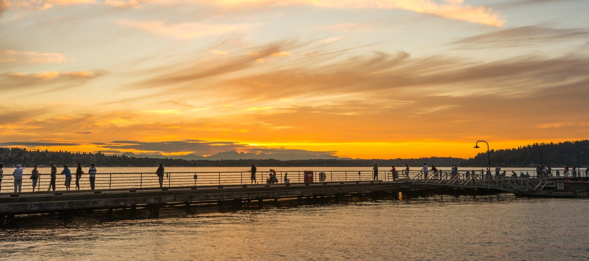

An inner-ring suburb of Seattle, Renton is located in a centralized area with 3 major freeways starting and ending points, I-5, 405, and 167. Historically, Renton was known for coal mining, timber, and salmon fishing. Today, it is known for the production of Boeing commercial airplanes. The city has a mix of historic downtown buildings and modern plazas. Full of different variety of entertainment, from antique shops, museums, and eateries. Renton is a little best-kept secret that will have you extending your trip!
| Fact | Detail |
|---|---|
| Population | 106,785 People |
| Incorporation | 1901 |
| Region | Southeast shore of Lake Washington |
| Classsification | Suburb |
| Average Income | $93,388 |
| Compared to State Average | $91,306 |
Source: Renton Tourism | Wikipedia | Census.gov